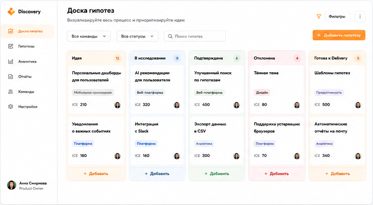
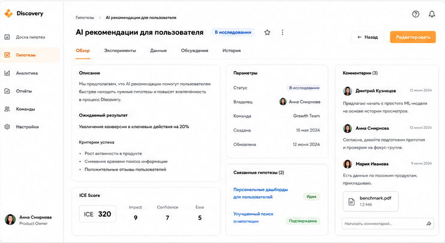
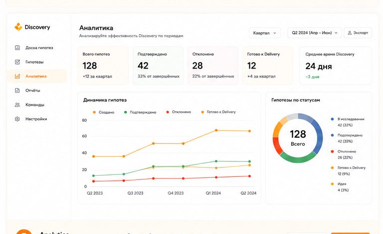
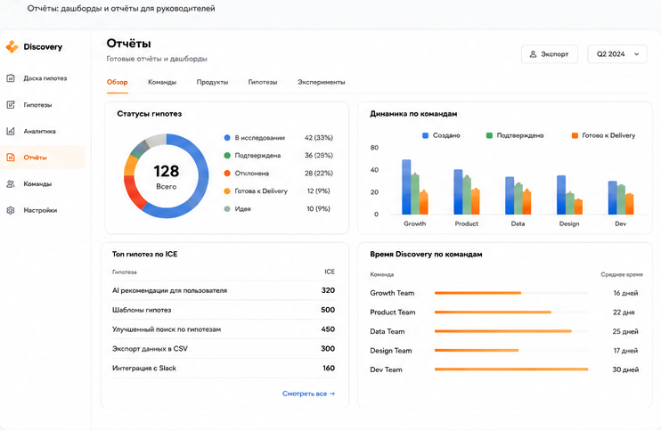

1
DISCOVERY
Hypothesis Board
Центральная доска для всех гипотез вашей команды.
- Kanban по статусам
- Фильтры и поиск
- Оценка ICE
- Совместная работа

2
HYPOTHESIS
Hypothesis Detail
Вся информация о гипотезе, экспериментах, данных и решениях в одном месте.
- Описание и ожидаемый результат
- Параметры ICE
- Эксперименты и данные
- Комментарии и файлы

3
ANALYTICS
Analytics
Отслеживайте ключевые метрики, динамику гипотез и эффективность процесса Discovery.
- Ключевые показатели
- Динамика по статусам
- Среднее время Discovery
- Аналитика по командам

4
REPORTING
Reports
Готовые отчёты и дашборды для руководителей и команд.
- Статусы гипотез
- Производительность команд
- Время Discovery
- Экспорт и расшаривание

Готовы попробовать Discovery?
Учебный стенд для Product Discovery и продуктовой аналитики.